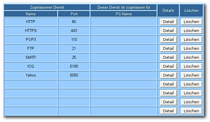

Hardware-Router
Ein Router ist ein Rechner, der dazu dient, Netzwerk-Daten von einem Netzwerk in ein anderes zu transferieren. Für den Heimanwendern ist der Router normalerweise ein käufliches Produkt in Form eines kleinen Kastens mit 4+1 Netzwerkbuchsen. Bei Kombination mit einem sonst separaten DSL-Modem bzw. Funkfähigkeit spricht man auch gerne von DSL- oder WLAN-Routern.
Für gewöhnlich übernimmt auch der Router die Einwahl in das Internet. Es muss lediglich das lokale Netzwerk eingerichtet werden.
Vor der Beschaffung¶
Soll ein neuer Router unter Ubuntu verwendet werden, empfiehlt es sich, darauf zu achten, dass er per HTTP konfigurierbar ist. Manche Gerätetypen besitzen diese Möglichkeit nicht, sie lassen sich nur mit Hilfe eines Konfigurationsprogramms bedienen, welches vom Hersteller in der Regel nur für das Betriebssystem Windows zur Verfügung gestellt wird (Beispiel: Netgear GS105E, GS108E). Diese Router können unter Linux-Betriebssystemen nicht konfiguriert und damit auch nicht sinnvoll genutzt werden.
Konfiguration¶
|  |
Siemens SE505  |
Da hier nicht alle Router aufgeführt werden können, folgt nur eine allgemeine Anleitung für die nötigen Schritte. Bei Bedarf bitte im Handbuch des Routers nachlesen, wie das Gerät zu konfigurieren ist. Prinzipiell müssen folgende Schritte abgearbeitet werden:
Einen Browser öffnen, wobei unter Umständen Javascript und evtl. Java aktiviert sein müssen (es steht im Handbuch, was benötigt wird).
Die IP-Adresse des Routers eingeben, z.B. 192.168.2.1. Diese erfährt man im Handbuch des Routers.
Zugangsdaten des Internet-Anbieters ("provider") eintragen.
Eventuell darauf achten, dass der DHCP-Server im Router aktiviert ist.
Im Router die gewünschten Dienste freigeben bzw. sperren (näheres im Handbuch nachlesen).
Meistens hat der Router die IP-Adresse 192.168.1.1. Diese kann jedoch auch manuell geändert werden. Häufig lässt sich auch die Adresse des Routers durch die IP-Adresse des eigenen Rechners bestimmen. Dies liegt daran, dass sich beide Rechner, der eigene Rechner und der Router, im selben Netzwerkbereich befinden müssen. Ist also bspw. die IP-Adresse des eigenen Rechners 192.168.34.34 und wurde eine Subnetzmaske von 255.255.255.0 eingestellt (was meist der Fall ist), dann muss die IP-Adresse des Routers die Form 192.168.34.xxx haben, wobei xxx eine Zahl zwischen 1 und 255 sein kann. Meist wird hier aber die 1 gewählt.
Allgemeine Sicherheitstipps¶
Tipps, die auch wirklich ein Plus an Sicherheit bringen¶
Der Zugriff auf die Weboberfläche des Routers sollte durch ein eigenes und sicheres Kennwort gesichert sein.
Die Weboberfläche des Routers darf nur aus dem lokalen Netzwerk erreichbar sein. Manchmal lässt sich dies über eine Option deaktivieren. Dies sollte man vermeiden.
Falls man einen WLAN-Router besitzt, sollte man die Datenverschlüsselung (WEP/WPA/WPA2) im WLAN unbedingt aktivieren, um Fremden den Zugang zu privaten Daten bzw. zum Router zu erschweren. Sofern die Möglichkeit besteht, sollte unbedingt WPA2 verwendet werden, da WEP sehr leicht zu knacken ist und nur ein kleines Hindernis darstellt. Siehe dazu WLAN-Konfiguration.
Tipps, die immer wieder genannt werden, die aber keine Hindernisse darstellen¶
"MAC-Filter aktivieren": Jedes Netzwerkgerät besitzt eine eigene MAC-Adresse. In vielen Routern lassen sich Filter einrichten, wodurch nur eingetragenen MAC-Adressen der Zugang zum Netz gestattet werden soll. Allerdings lassen sich solche Nummern ohne weiteres manipulieren, so dass ein MAC-Filter keinen wirksamen Schutz darstellt.
"SSID deaktivieren": Jedes WLAN besitzt einen SSID-Namen. Manche Router bieten die Möglichkeit, bewusst keinen Namen zu setzen, so dass das WLAN-Netzwerk "unsichtbar" sein soll. Doch diese Möglichkeit ist total wirkungslos. Man kann es mit einem Straßenschild vergleichen, auf dem der Name der Straße fehlt. Wer will, erkennt trotzdem sofort, dass hier eine Straße ist.
"Marketinggags": Marketingfeatures wie "Unsichtbarkeit" oder "Hardwarefirewall" dagegen unbedingt deaktivieren. Außer den absichtlich weitergeleiteten Ports kommt sowieso nichts durch den Router, und diese Dinge stören deshalb höchstens legitimen Netzwerkverkehr.
Internetdienste¶
Möchte man einen Internet-Dienst (zum Beispiel einen Webserver) auf einem durch einen Router abgeschirmten Rechner einrichten, so müssen die entsprechenden Ports vom Router auf den Rechner weitergeleitet werden. Nicht jedes Gerät verfügt allerdings von Haus aus über eine Liste aller üblichen Dienste. Ausführliche Informationen (inklusive einer Liste der gebräuchlichsten Dienste und deren Portnummern) sind im Artikel Portweiterleitung zu finden.

- Erstellt mit Inyoka
-
 2004 – 2017 ubuntuusers.de • Einige Rechte vorbehalten
2004 – 2017 ubuntuusers.de • Einige Rechte vorbehalten
Lizenz • Kontakt • Datenschutz • Impressum • Serverstatus -
Serverhousing gespendet von